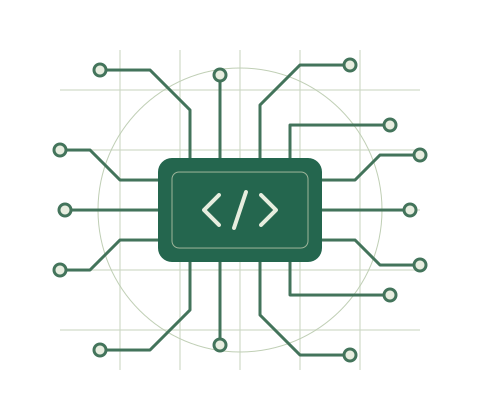

Electrical & Computer Engineering
Hi, I'm Akash.
Exploring the connection between software and the physical world.
I'm an engineering student at The University of Texas at Austin with interests in automation, embedded systems, and building useful technology.
Explore my work
Hardware meets software.
01 / About
Curious about how things work.
I'm studying electrical and computer engineering at UT Austin, where I enjoy learning how hardware and software come together to solve practical problems.
Through internships and coursework, I've explored industrial controls, power systems, and software development. I enjoy working with others, learning new tools, and turning ideas into working systems.
02 / Experience
Learning through real-world engineering.
Experience across manufacturing, energy, and engineering consulting.
Tesla
Engineering intern · Automation & controls
Worked with industrial automation, robotics, and monitoring systems to support manufacturing operations.
ExxonMobil
Engineering intern · Instrumentation & controls
Supported control system improvements, instrumentation, and operational reliability in an industrial environment.
Procter & Gamble
Engineering intern · Manufacturing technology
Contributed to automation and monitoring projects using control systems, machine vision, and data tools.
Burns & McDonnell
Engineering intern · Power systems
Helped with power system studies and used programming to support engineering analysis and routine workflows.
03 / Projects
Ideas put into practice.
Embedded systems
A pocket-sized game
Built a microcontroller-based game that brings together physical controls, a display, and audio. An opportunity to explore hardware interfaces and low-level programming.
Microcontrollers / C & C++ / Hardware integration
App development
A mobile racing companion
Collaborated on a mobile app that uses device sensors to explore racing-related information. A hands-on introduction to building an app as part of a team.
JavaScript / Mobile development / Sensor data